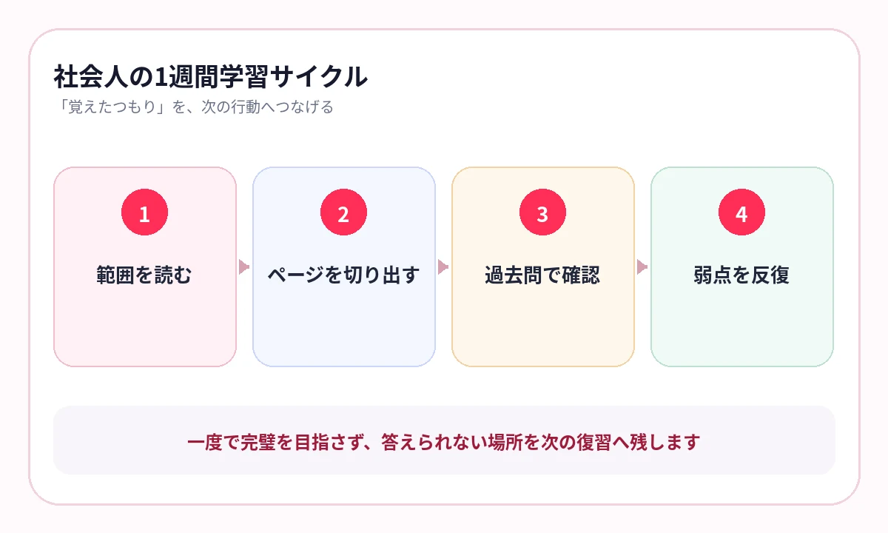

平日は仕事で疲れ、休日にまとめて勉強しようとして、教材を開かない週が続いていませんか？
社会人の資格勉強では、知識量だけでなく、学習を再開するまでの手間が大きな壁になります。机、参考書、ノートをそろえる必要があると、30分空いても始められません。
合格へ近づくのは、長時間勉強できた日だけではありません。通勤、昼休み、待ち時間に、前回迷った知識へすぐ戻れる日です。
資格勉強は「読む・答える・解く」を分ける
参考書を読む、用語を思い出す、過去問を解く。この3つは目的が違います。同じ時間にすべて行おうとすると、どこまで進んだか分からなくなります。
読む
制度や仕組みを理解し、用語の意味をつなげます。
答える
数字、要件、定義、略語を見ないで取り出します。
解く
過去問で知識を選び、例外やひっかけに対応します。
暗記アプリは「答える」を短くする道具です。問題演習で見つけた穴を、次の学習へつなげます。
スマホ暗記と相性が良い資格を見分ける
資格名の人気だけでなく、教材の中に「繰り返し答える知識」がどれだけあるかで判断します。
| 相性が高い教材 | 確認する内容 |
|---|---|
| 用語・定義が多い | 言葉と意味、似た用語の違い |
| 数字・期間が多い | 基準、期限、率、上限 |
| 制度・法律が多い | 主体、要件、効果、例外 |
| 成分・作用が多い | 名称、働き、注意対象、副作用 |
計算や記述がある資格でも、知識部分を短く回せると、机では演習へ集中できます。
{kind=link}

1週間を、3種類の学習で回す
平日の移動
前回の弱点を5〜10分で答えます。
平日の夜
新しい範囲を読み、覚えるページを切り出します。
週末
過去問を解き、誤答の原因を分類します。
次の週
知識不足だったページを弱点優先で繰り返します。
横にスワイプして画像を確認できます


資格ごとに、覚え方を変える
同じ「資格暗記」でも、迷うポイントは違います。専用記事では、試験範囲と混同しやすい知識に合わせて復習方法を分けています。
教材を、通勤で答えられる形へ
AI暗記シートでは、紙の参考書、スクリーンショット、PDFから教材を作り、重要語句をマスクできます。複数ページをまとめて取り込み、資格名・科目・論点で保存できます。
問題演習で迷った教材へ「あやしい」「覚えていない」を残し、次の移動時間は弱点を優先して出題します。
よくある質問
資格勉強をスマホだけで完結できますか？
知識の確認はスマホ、理解と問題演習は参考書や過去問と役割を分けると効率的です。
通勤時間は新しい範囲と復習のどちらに使うべきですか？
通勤は再開しやすい復習に向いています。新しい範囲は落ち着いて読み、次の通勤で答えるページを作ります。
どの資格から専用記事を読むべきですか？
受験する資格の記事を優先してください。試験特有の数字、用語、制度に合わせて学習法を変えています。
参考情報
試験範囲・制度は公式情報、復習方法は学習科学の研究を参照しています。
まとまった時間を待たない資格勉強へ
次の5分で、前回の弱点へ戻る
参考書やPDFの重要ページを暗記テスト化。通勤・昼休みに、資格ごとの弱点を優先して繰り返せます。
iPhone・iPad対応／3枚まで無料保存／継続利用は800円の買い切り